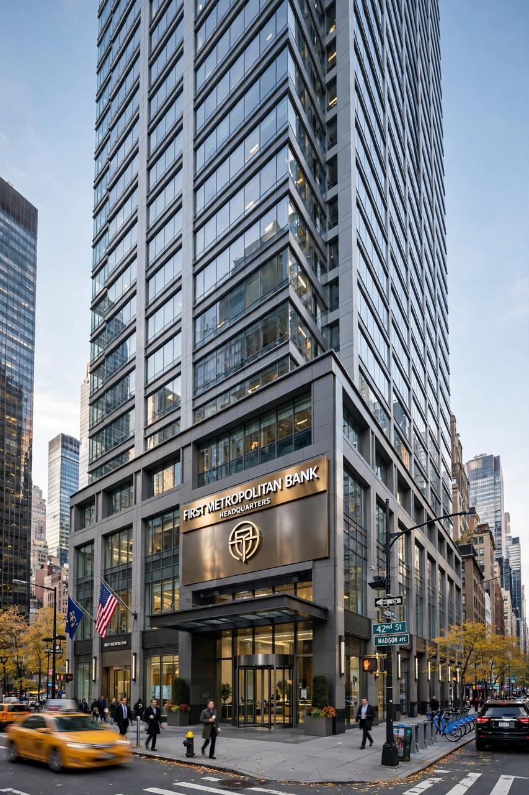

JPMorgan Chase

Image: JPMorgan Chase headquarters tower at 270 Park Avenue, New York City | |
| Type | Public |
|---|---|
| Industry | Banking, financial services |
| Founded | December 1, 2000 (predecessor roots to 1799) |
| Headquarters | 383 Madison Avenue / 270 Park Avenue, New York City, U.S. |
| Key people | Jamie Dimon (chairman and CEO) |
| Products | Retail banking, investment banking, asset management, private banking, credit cards, treasury services |
| Revenue | ~US$160 billion (approx., 2023) |
| Total assets | ~US$3.9 trillion (approx.) |
| Employees | ~310,000 (approx.) |
| Website | jpmorganchase.com |
JPMorgan Chase & Co. is an American multinational financial services firm headquartered in New York City. It is the largest bank in the United States and the world's largest by market capitalisation, and a leading global investment bank. The firm is a systemically important "too big to fail" institution and a component of the Dow Jones Industrial Average.
History
The modern company was formed through a series of mergers among storied institutions whose roots reach back to 1799: Chemical Bank, Chase National Bank, Manufacturers Hanover, Bank One, and J.P. Morgan & Co., the house built by financier J. P. Morgan. The 2000 merger of Chase Manhattan and J.P. Morgan created the modern firm; the acquisition of Bank One in 2004 brought Jamie Dimon to the bank, and he became CEO in 2005.
During the 2008 financial crisis JPMorgan acquired Bear Stearns and the banking operations of Washington Mutual. In 2023 it acquired most of the assets of the failed First Republic Bank.
Operations
The firm operates through consumer and community banking (under the Chase brand, with roughly 5,000 branches), corporate and investment banking, commercial banking, and asset and wealth management. Its investment bank regularly leads global league tables for M&A advice, underwriting and trading revenue.
Criticism and controversies
The bank has paid large fines over matters including the 2012 "London Whale" trading losses, mortgage practices before the financial crisis, and precious-metals spoofing. Dimon, one of the longest-serving major-bank CEOs, is a prominent voice in debates about regulation and the economy.
See also
Bank of America · J. P. Morgan · Jamie Dimon · 2008 financial crisis